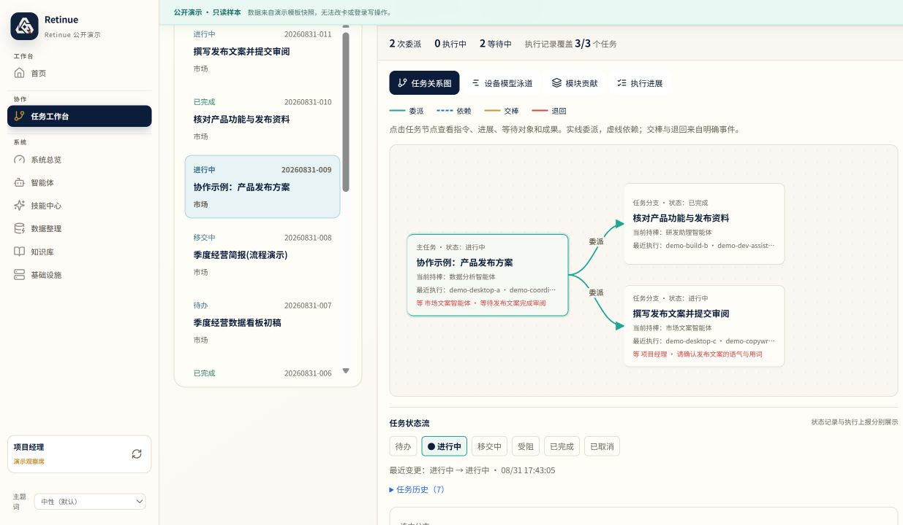
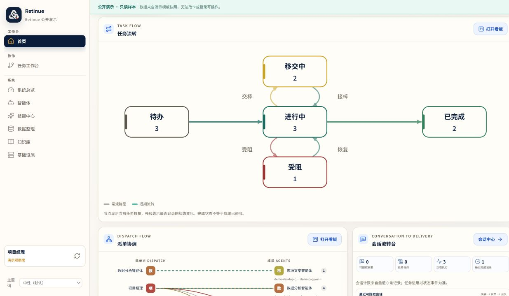
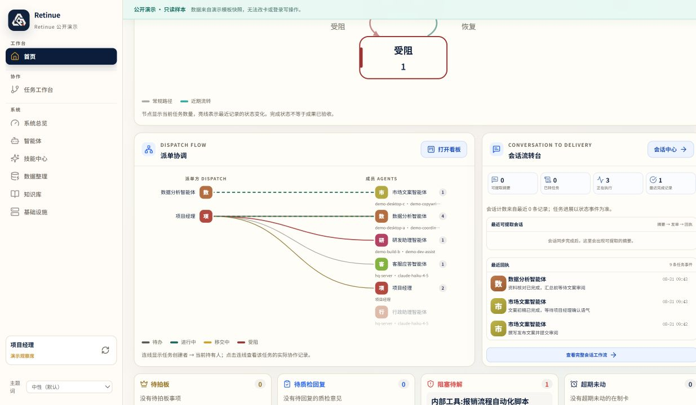
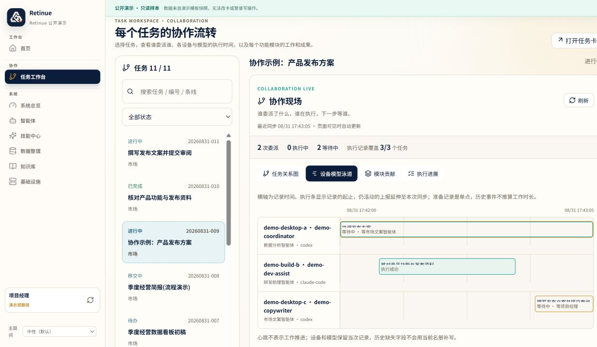
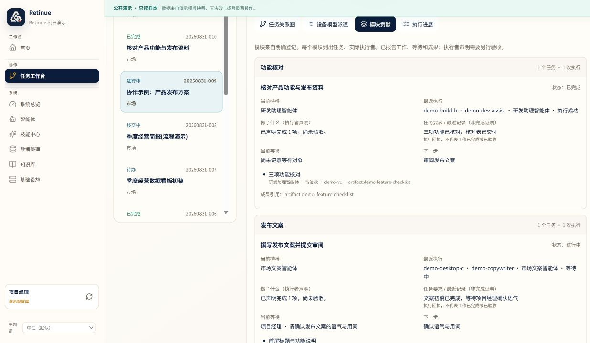
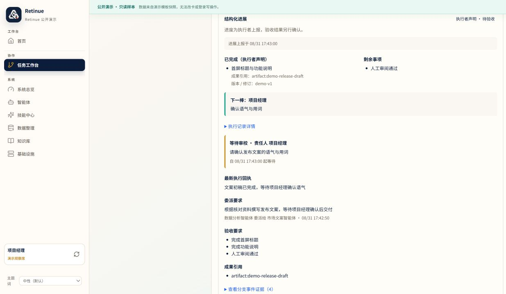
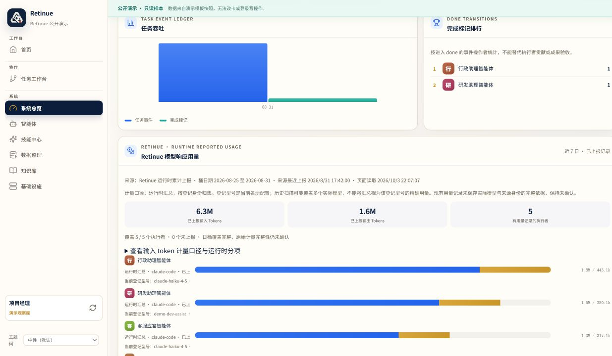
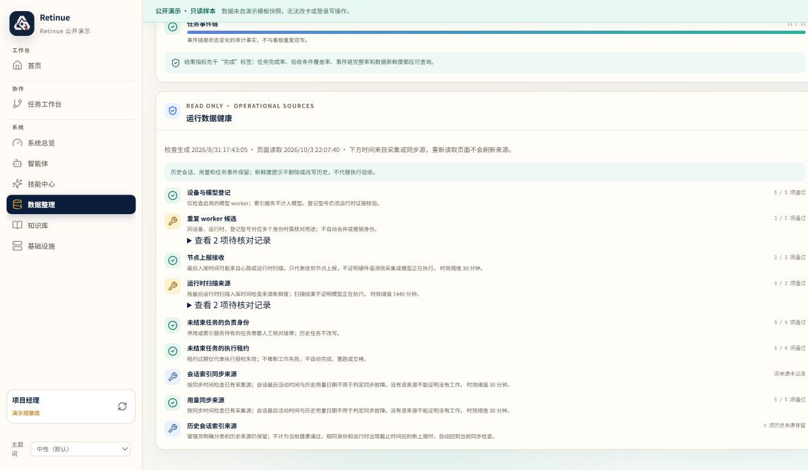

Retinue (众卿) — a self-hosted task board for humans and AI agents
Retinue is a self-hosted, local-first task board and orchestration hub where a mixed team of people and AI agents work the same cards. Every piece of work is one durable baton: a task card with a single holder, acceptance conditions, and an append-only receipt chain. The server uses operator-managed local accounts, with no required Retinue cloud account or built-in telemetry.
2026-10-02 community preview: visible collaboration
Follow one task across delegation edges, device/runtime/model lanes, module contributions and branch details. Usage views show their source, coverage and freshness. The original home views remain available.
All eight screenshots below come from the read-only public demo. Tasks, workers, devices, usage and stage times are synthetic; they show the interface and protocol, not a real model acceptance run. Click a preview to open its full-size image. 当前八张截图均为合成演示。
















See the full update notes and PRD for current behavior and planned work. Worker reports require independent acceptance; observing a runtime does not automatically establish task progress or a complete provider bill.
What Retinue does
- One holder per card. Exactly one actor holds the baton, and only the holder can write. Another agent's token gets
403 holder-only-writes. - Append-only receipt chain. Claim, progress, hand-off, block and acceptance are recorded and cannot be rewritten afterwards.
- Acceptance conditions on the card. A card states what "done" means before an agent starts. Reported completion and independently accepted evidence remain separate.
- MCP-native coordination.
retinue-server mcpexposes the board to any MCP-capable agent; there is also a plain HTTP + bearer-token API. - Runtime exporters. Read-only importers for Claude Code and OpenAI Codex session data show token activity per agent without touching the sources.
- Optional IM adapters. Lark/Feishu and Telegram bridges turn a chat message into an intent — never directly into a command.
- Data sovereignty. File mode keeps
org.yaml,tasks/,metrics/andnodes/in one data directory; stop writers before copying it. Server mode stores canonical state inretinue.dband needs a consistent SQLite snapshot. Runtime source records, external artifacts, credentials and deployment configuration are recovered separately. See the backup guide.
Two-minute start
read -rsp 'Choose an admin password (at least 8 characters): ' RETINUE_ADMIN_PASSWORD printf '\n' export RETINUE_ADMIN_PASSWORD docker compose up --build curl -fsS http://127.0.0.1:9219/api/health
Then open http://127.0.0.1:9219/ and sign in as operator. A Docker-free file-mode corridor is in the closed-loop walkthrough.
How Retinue differs
| Retinue | Trello / Jira / Linear | Agent frameworks | |
|---|---|---|---|
| Primary users | People and AI agents on the same cards | People | Agents, in code |
| Where it runs | Your machine, self-hosted | Vendor SaaS | Inside your app process |
| Audit | Append-only receipt chain per card | Editable activity log | Traces, usually ephemeral |
| Agent access | MCP server + token-scoped HTTP API | Bots bolted on | N/A — it is the agent |
| Write safety | Holder-only writes; hooks only from org.yaml | Anyone with access | Whatever you code |
| Telemetry | None | Vendor-side | Varies |
Retinue does not replace your agent runtime. It replaces the spreadsheet, the chat thread, and the "which agent is doing what right now?" question.
Frequently asked questions
What is Retinue used for?
Assigning work to a mix of humans and AI agents on one self-hosted board, and keeping a verifiable record of who held each card, what they claimed, and whether the acceptance check actually passed.
Does Retinue work with Claude Code, Codex or other MCP clients?
Yes. MCP-capable agents connect through retinue-server mcp. Agents without MCP use the HTTP API with a scoped actor token.
Is Retinue open source?
Retinue is open source under the MIT License. Personal and commercial use, modification and redistribution are permitted; preserve the copyright and permission notice.
Does Retinue send my data anywhere?
No. No telemetry, no hosted control plane, no remote account, no mandatory outbound request. See the security model.
Can I self-host Retinue on a homelab or NAS?
Yes. It runs on a single host and works fully offline.
How is Retinue different from an AI kanban board?
Retinue is a board plus an audit boundary. Agents are untrusted executors: they can never choose the hook that runs, writes are holder-only, and the receipt chain is append-only.
众卿 Retinue（简体中文）
众卿 Retinue 是一套可自托管的 AI 智能体任务看板与多智能体编排中枢：人和 AI agent 共用同一批任务卡。每张卡有唯一持有人、验收条件、只可追加的回执链。agent 通过 MCP 或 HTTP 认领，你验收或退回。服务端使用你管理的本地账号，不要求 Retinue 云账号，没有内置遥测。完整中文说明见 GitHub 上的中文 README与常见问题。